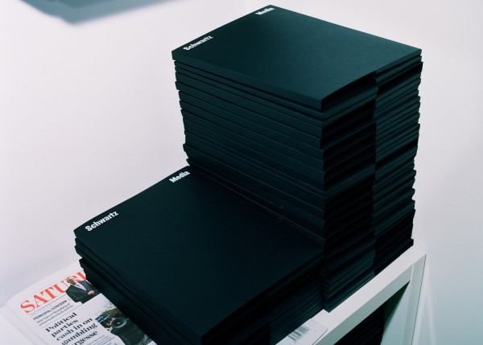
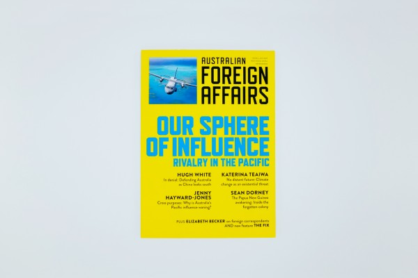
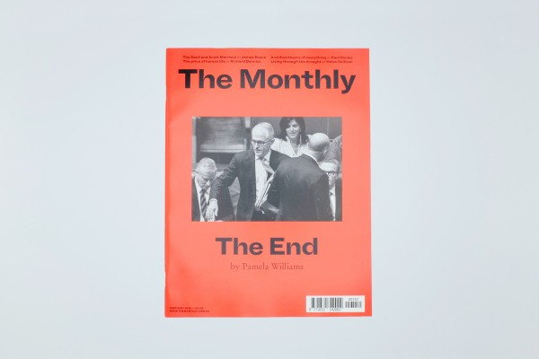
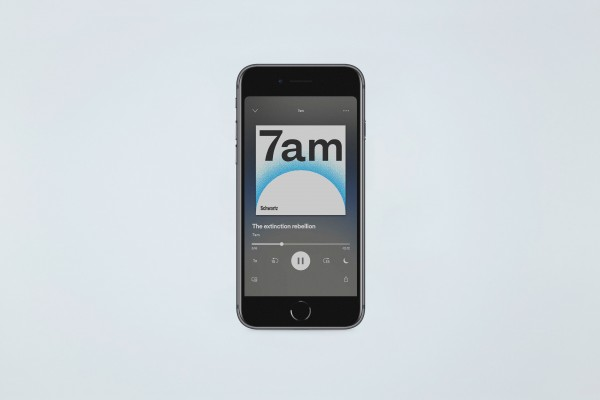
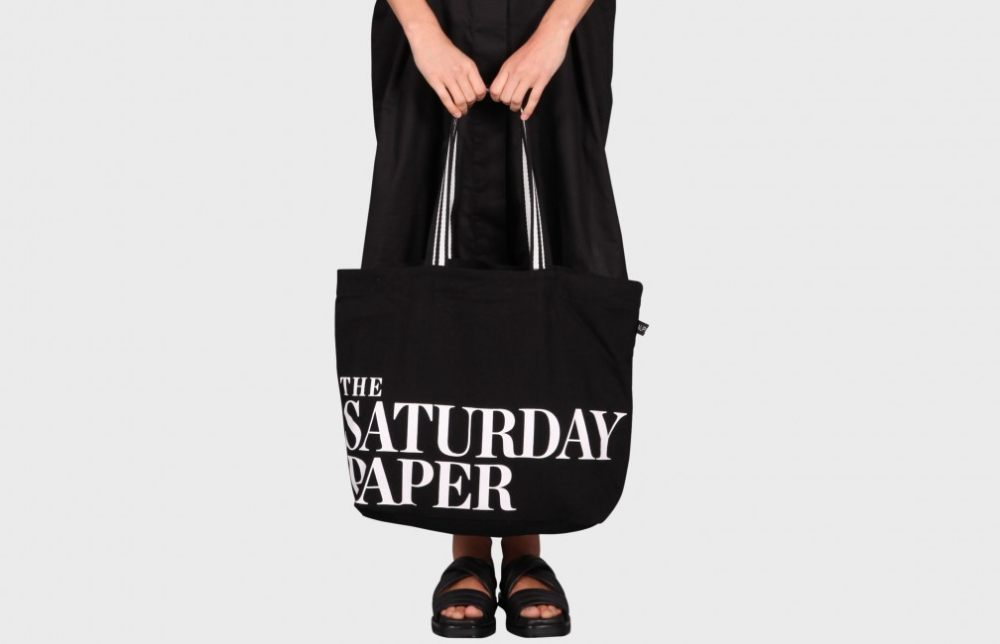
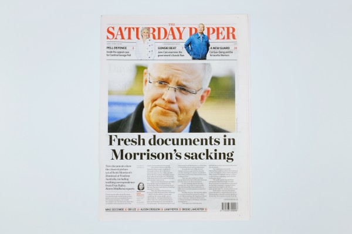
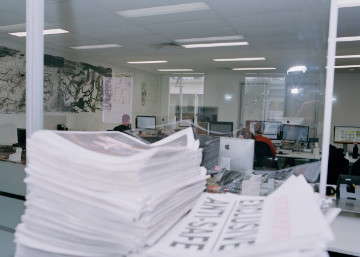
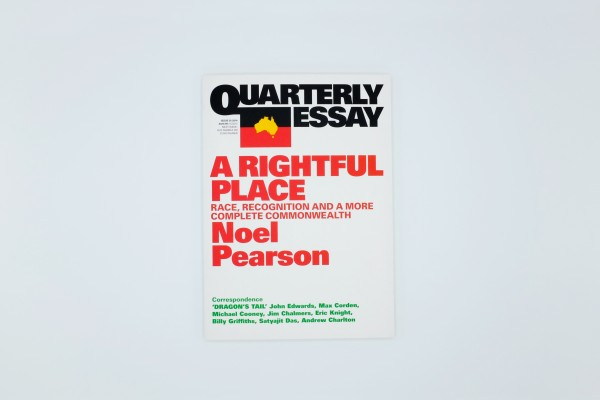

News that lasts.
Our journalists create in-depth, independent, original public interest reporting, focusing on storytelling and insight.


The Monthly publishes long-form journalism from the nation's leading writers and thinkers, covering Australian politics, culture and ideas.
The Saturday Paper is a weekly newspaper, dedicated to telling the whole story. It publishes long-form accounts of the week’s key stories.


7am is a daily news podcast that tells the big stories through in-depth interviews and sharp analysis.

Quarterly Essay is the leading agenda-setting journal of politics and culture in Australia.

Australian Foreign Affairs is the country’s leading foreign affairs journal.
Get in touch with our advertising team.


In collaboration with Alpha60, The Saturday Paper and The Monthly bring you a tote bag.
The Saturday Paper, The Monthly and Blackhearts & Sparrows bring you A Wine Service – carefully chosen wine, delivered to your door.
Work at the country’s leading independent publisher.
Keep in touch with what is happening at Schwartz Media.
Get in touch with our editorial and advertising teams.